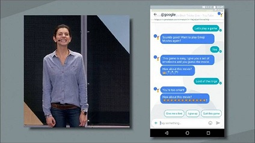
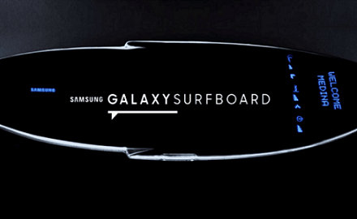
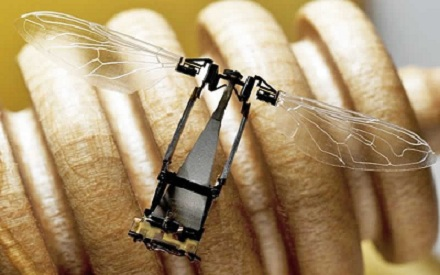

Google muestra el ‘whatsapp’ del futuro con Allo
¿Qué es Google Allo exactamente? Se trata de un programa de comunicación en el móvil muy semejante a WhatsApp, pero que mejora en muchos aspectos la oferta existente en el mercado ahora mismo. Google ha puesto en la coctelera los mejores ingredientes de sus rivales, incorporando su magia particular y como consecuencia nos encontramos con una app de mensajería útil, versátil y muy divertida. Los de Mountain View han seguido hábilmente los pasos de Facebook al no exigir que el usuario de Allo tenga una cuenta activa en su sistema: basta con introducir el número de móvil para comenzar a utilizarlo.
Desarrollan una tabla de surf inteligente
La tabla incorpora, en su centro, un teléfono inteligente Samsung Galaxy S7 y una especie de cajón en sus laterales que recibe mensajes a través de Twitter con un hashtag predefinido. Estos comentarios son transmitido a una pantalla incorporada en la cubierta de la tabla y que puede ser vista por el deportista en tiempo real mientras se desplaza por el mar.
En la pantalla, que incorpora un sistema de luces LED para una mejor visualización, es posible observar gráficos con información en tiempo real sobre la dirección e intensidad del viento, dirección e intensidad de las series de olas que se acercan.
Crean robot abeja capaz de posarse en cualquier lugar
El robot, bautizado como RoboBee (roboabeja), pesa unos 100 gramos, es capaz de posarse en superficies como el cristal, la madera o las hojas y remontar el vuelo, según un estudio publicado en la revista "Science".
El pequeño ingenio es un ejemplo de cómo los ingenieros pueden aprender de la naturaleza para crear la próxima generación de robots, señala la publicación.
Los robots voladores pueden emplearse para reconocer el lugar de un desastre natural o detectar químicos peligrosos, pero volar requiere mucha energía y las máquinas más pequeños se quedan sin batería rápidamente. Por ello, ser capaz de posarse reduce de manera considerable la cantidad de energía y aumenta la autonomía de trabajo.